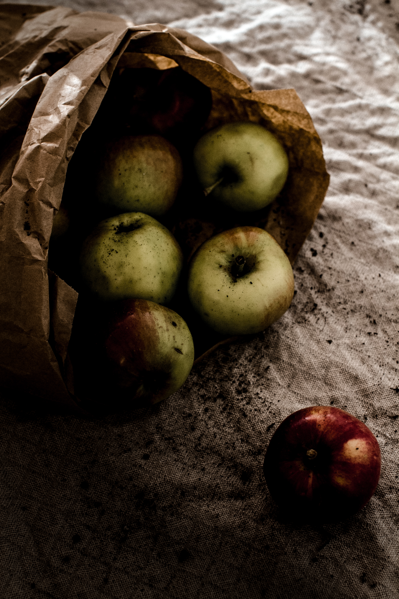
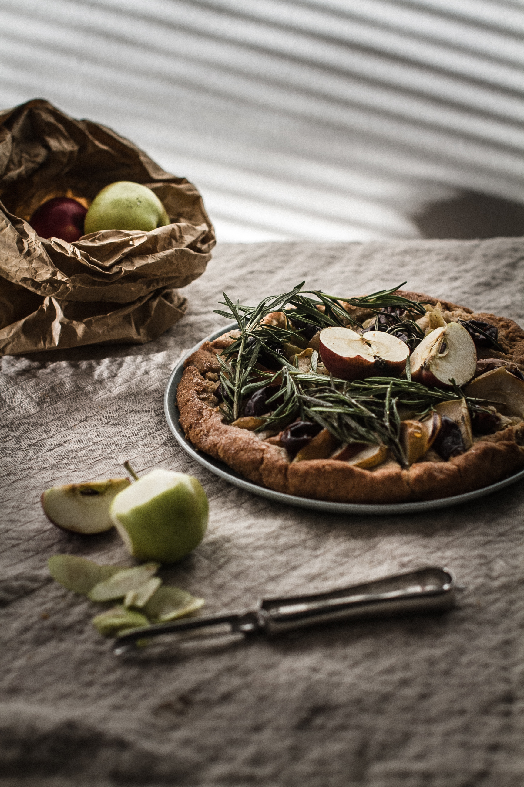
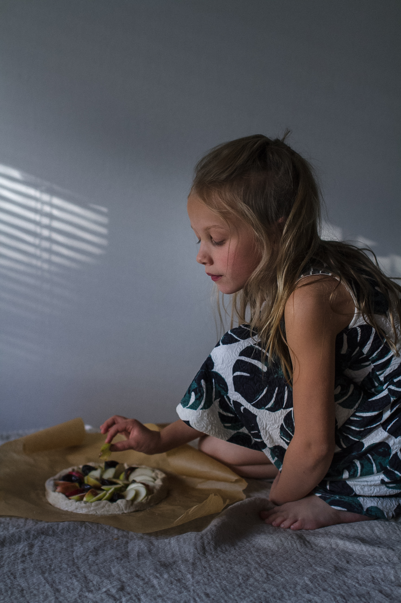
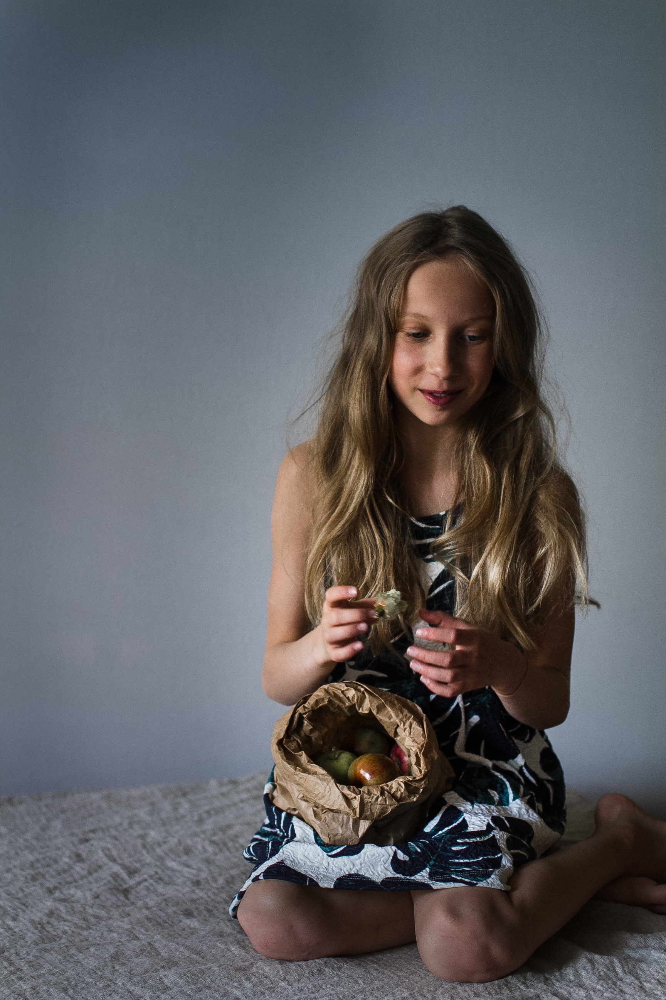
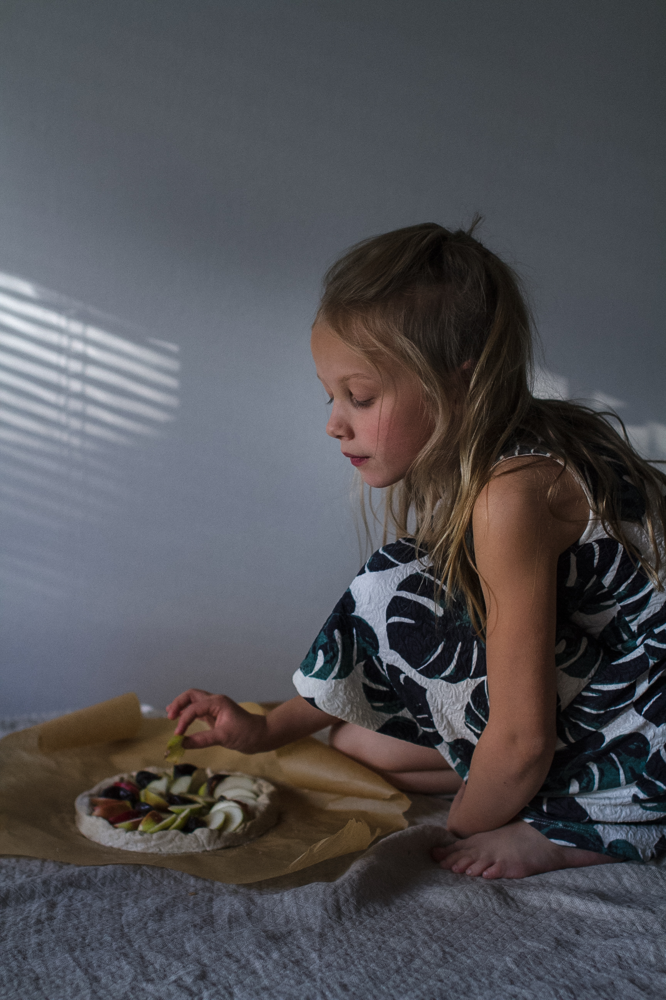
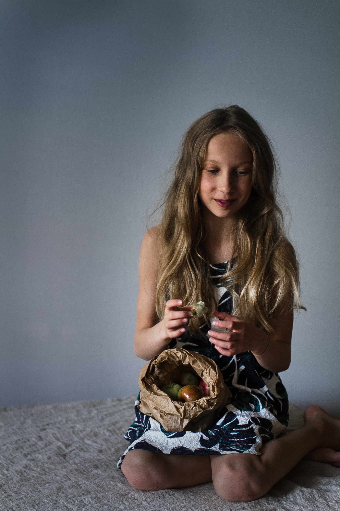

letter
Food for thought
recipe and photos Emmi-Liia Sjoholm
Say something about this recipe. Say something about this recipe. Say something about this recipe. Say something about this recipe. Say something about this recipe. Say something about this recipe. Say something about this recipe. Say something about this recipe. Say something about this recipe. Say something about this recipe.
- 100 g of butter
- 3 dl buckwheat flour
- 1 dl oat cream
- 1 tbs of sugar
- 3 small apples
- 10 fresh dates
I wanted to create a slow paced site that would still concentrate on food and health but would also have more journalistic content. In a week I had enrolled in a web design course - something that I'd wanted to do for a long time. Over the next three months I created this puplication, a hybrid that works as my portfolio but was influenced by blogs and most importantly magazines. I did all the design and coding myself and of course all the images, articles and recipes are mine. Each monthly issue concentrates on its own theme. The first one is mind_fuel_ness. One might think that I just misspelled mindfulness since I'm from Finland but it was intentional. I wanted to focus on the fuel that keeps us going, not only physically but mentally as well. I hope you enjoy your stay. Feel free to leave a comment below the posts. If you feel fulfilled after the read, remember to subscribe on my mailing list. That way you'll never miss an issue!


 


